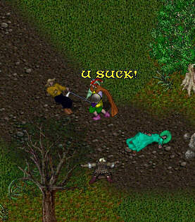
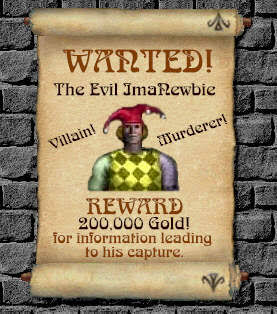
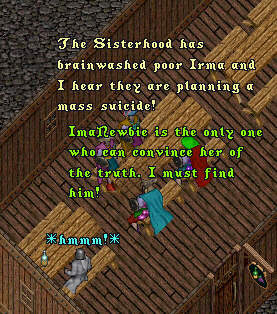
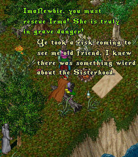
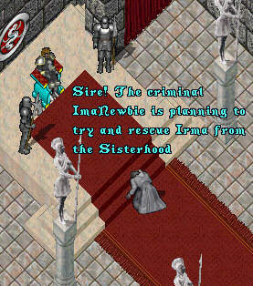
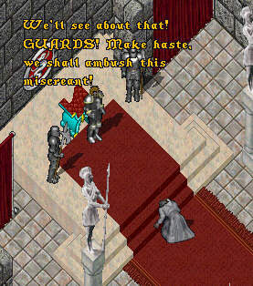
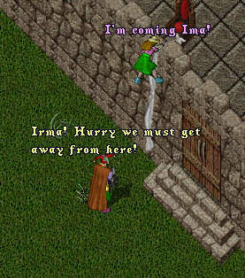
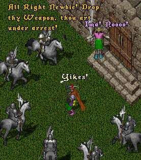

Episode 84: "Something Wicked This Way Comes! (Part 3). ImaNewbie's reign of terror continues unabated. Even the nightmare of his bed surrounded by the ghosts of his victims has not stopped him killing. As this episode opens ImaNewbie is in the process of adding three more notches on his War Axe. Make sure you have seen episodes #81 to #83 first.

As his murderous rampage continues, wanted posters begin
to appear on public buildings in Britannia, with an ever
increasing bounty placed on his head.

Meanwhile in a tavern in Britain, several of the L.O.S.E.R.S. sit
around discussing an extremely disturbing message. Seems that the
Sisterhood that Irma joined turns out to be a cult and may be
bent on pulling a Jim Jones. Unbeknownst to them a stranger
seated at the next table listens in on their discussion.

ImaDufus heads out to a camp in the woods where
he has heard ImaNewbie is hiding out.

Meanwhile, it appears that the stranger at the next
table in the tavern was a spy for Lord British and
hurries to him with what he has overheard.


ImaNewbie takes his leave of ImaDufus and proceeds back
to the monastery. After explaining the suicide plot to Irma
she realizes that he is telling the truth and hurries to tie
some sheets together to make good her escape.

